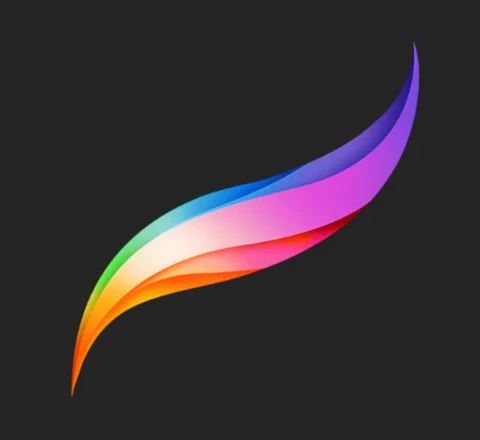
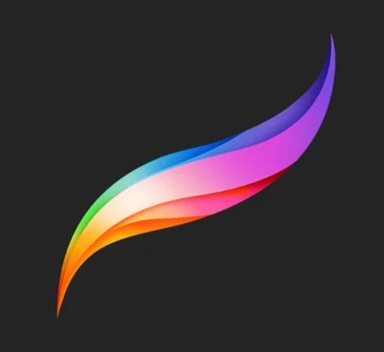

ABOUT ME
ABOUT ME
Creative since birth, I have been drawing for as long as I can remember. I am more experienced in using traditional methods in making art however I am also quite flexible when it comes to digital mediums. Committed to making more art with the goal of it being impactful, while continuing to harness my skills and learn more along the way.
EDUCATION
FEU Institute of Technology, Bachelor of Multimedia Arts with Specialization in Animation and Digital Film.
JAN 2021-PRESENT
- Main illustrator for ‘Empyreal Humans’, a special project started by me and my best friend Vianna Tamayo, a writer and fellow artist.
17 ARTWORKS SOLD
OCT 2021-PRESENT
-6 original paintings, 11 commissioned pieces.
Competed in the 19thGSIS Art Competition (JUL 2024)
PARTICIPATED IN EXHIBITS
AUG - NOV 2023
-Art Show PH Gold and Teal (Online)
-Art Show PH Law of Abstraction 2 (Online)
-Art Show PH 12 x 12 (Online)
-Sentro Leona: Impressions (Face to face)

 
